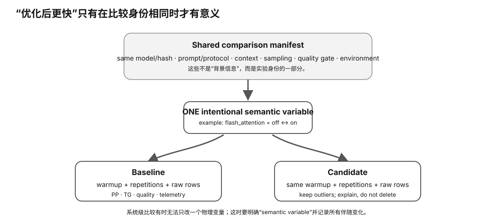

Measurement Capstone · L0→L2
测量与诊断：一次只改一个语义变量
“我改了三个参数，快了 15%”几乎没有诊断价值。本课训练整个课程最重要的实验习惯：先定义问题、冻结协议、只改变一个语义变量、保存原始证据，再解释结果。做不到这一点，后面的 GPU/量化/backend 调优都容易变成玄学。
Prerequisite Check
你应知道 PP/TG、模型/量化、runtime/backend、context、KV、功耗/温度都是可能影响结果的变量。无需会统计学。
真实问题：为什么“优化后更快”经常是错觉？
因为你可能同时改变了：
- 模型或量化；
- prompt token 数；
- context / batch；
- GPU offload；
- flash attention / KV type；
- runtime build；
- 后台负载；
- 功耗/温度状态。
只要多个语义变量一起变，你就不知道哪个造成结果，也不知道能否复现。
1. 先写 hypothesis
好的实验不是“跑跑看”，而是：
Observation: TG 比预期低 Hypothesis: 当前 decode 受 memory bandwidth 限制 Intervention: 只改变 model quant / effective bytes Prediction: 如果 hypothesis 较合理，TG 应改善；PP/PPL 可能以不同方式变化
预测不要求命中，错预测也是学习证据。
2. 什么叫“语义变量”？
不是文件名变没变，而是实验含义有没有变。例如：
flash_attention=false → true是执行变量；- Q4 模型换 Q5 是 model artifact/quant 变量；
- llama.cpp commit 改变是 runtime/build 变量；
- 3090 换 4090 是 hardware 变量；
- prompt token sequence 改变是 workload 变量。
一次实验只声明一个 intentional variable，其他字段固定。
3. Manifest 为什么比命令历史可靠？
shell history 只告诉你执行过什么命令，不保证模型 SHA、prompt token、质量 corpus、硬件 profile 都没变。manifest 把固定项与变化项显式列出，使比较可审计。
comparison_id: same fixed: protocol / quality / prompt ... variant: hardware / runtime / model / execution intentional_variable: variant.execution.flash_attention

4. Baseline / Candidate：必须共享比较身份
一对 A/B 应有同一 comparison_id，并分别保存 baseline/candidate manifest、raw result、command、profile、质量 evidence。不要只留一张“前后 token/s”截图。
5. Warmup 与 repetitions：为什么第一次常不可靠？
第一次运行可能包含：
- 模型 page/cache warmup；
- kernel/library initialization；
- JIT/graph compile；
- clock ramp；
- filesystem cache。
因此先定义 warmup，再做多次 repetition。不要跑到出现喜欢的数字就停。
6. Central tendency 与 scatter
即使协议固定，每次运行也可能有噪声。初学者至少记录每次值，再看 median/mean 与 spread，而不是只取最好一条。
TG runs: 47.8, 48.1, 47.9, 53.0, 48.0 53.0 可能是异常值 保留它，调查它，不偷偷删掉
是否剔除异常值必须有事前/明确规则，并保留原始数据。
7. PP 与 TG 分开诊断
一个优化可能：
- PP 大幅变快、TG 几乎不变；
- TG 变快、PP 变慢；
- 两者都快但质量下降；
- 短 context 有利、长 context 失败。
这说明“性能”不是一个数。至少将 prompt processing 与 token generation 分开。
Worked Example：打开 Flash Attention 后 TG 快 8%，能说 FA 让模型快 8% 吗？
还不能。先确认：
- baseline/candidate 是同一模型 artifact；
- prompt token identity 相同；
- context、KV、offload 等执行项只有 FA 变化；
- 同一 runtime build；
- repetitions/thermal 条件一致；
- 质量 metric/task 没发生不可接受变化；
- 差异超过正常 run-to-run scatter。
满足后才可以精确写：“在协议 P、模型 M、硬件 H、runtime R 下，启用 FA 的 candidate TG 相对 baseline 提高约 X%。”不要泛化成所有模型/硬件。
8. 失败实验为什么不能删除？
失败可能证明：
- 某 feature 在该 build 不支持；
- 某参数组合 OOM；
- 某优化对该 workload 无效；
- 你的假设错误。
只保存成功结果会制造 survivorship bias。失败 evidence 要保留 stderr、配置与原因。
9. 调试：从“症状”到“最小区分实验”
好的下一步不是改最多参数，而是选择最能区分两个假设的实验。
Symptom: TG drops after 20 min H1: thermal throttling H2: background workload Next experiment: record clocks/temp + background process timeline without changing model/runtime
如果温度升高与 clock/TG 同步下降，H1 获得支持；如果出现后台任务时间重合，H2 更强。
10. 系统比较什么时候不能硬塞“一变量”？
有时你真的在比较两个完整系统，例如不同 GPU + 不同 backend。此时不要伪装成因果 A/B。明确标记 system comparison，只做描述性结果，不声称某一个内部变量导致差异。
Why it matters
- 让调优从“玄学参数”变成可重复实验。
- 减少多个变量一起变化导致的错误归因。
- 失败结果可以成为 compatibility/风险证据。
- 明确区分 causal-ish one-variable A/B 与 descriptive system comparison。
- 为后续 Intelligence I33–I42 的 tradeoff 工具提供实验纪律。
常见误区
- “结果更好就说明改动有效”——还要排除其他变量和噪声。
- “每次只改一个命令行 flag 就算一变量”——flag 可能同时改变多种语义。
- “最好的一次代表性能”——容易 cherry-pick。
- “失败 run 没用”——它可能是最重要的边界证据。
- “不同硬件完整栈也能做严格一变量因果比较”——通常只能 system comparison。
小实验：纸面 A/B 设计
任选 flash attention、KV type、quant 或线程数中的一个，写 baseline/candidate manifest 草稿。列出至少 10 个必须固定字段，再写预测和可能的反例。
无 GPU 也能完成。真机阶段再执行 Experiment 61。
排错
- 结果波动很大：先增加 repetitions，检查 thermal/background，不急着换参数。
- 无法保证只有一变量：降级为 system comparison。
- 质量工具不支持某参数：不要假装 quality fixed；标 BLOCKED 或设计明确 contract。
Retrieval Practice
- 什么是语义变量？为什么“一条 flag”不一定等于一变量？
- manifest 比 shell history 多证明了什么？
- 为什么 warmup 和 repetitions 都必要？
- 异常值应该怎么处理才不 cherry-pick？
- PP/TG 为什么可能对同一优化有不同响应？
- 什么时候应该把实验标成 system comparison？
Decision Rule
只有 baseline/candidate 共享固定协议、明确唯一 intentional variable、保留原始 evidence 并通过可重复检查时，才允许把差异归因到该变量。否则只描述“两个配置结果不同”。
Transfer
这一实验纪律适用于 GPU、模型量化、runtime、散热、功耗限制、网络、存储甚至二手验卡：先冻结环境，再做最小区分改变。
完成证据
完成本课后，保留一份 learner-owned completion artifact，至少包含：
- 用自己的话画出或写出本节最小 mental model，并标出关键变量/资源层；
- 完成本节小实验、worksheet 或无硬件 fallback；有真机时链接 raw Evidence，没有真机时明确标 L0 / DOCUMENTED / DEFERRED-HARDWARE；
- 写一条绑定 Evidence 的 PASS / FAIL / UNKNOWN / BLOCKED 结论，说明它怎样影响本地 LLM 的容量、性能、兼容、成本或风险判断；
- 写一句明确 non-claim：这份证据还不能证明什么。
只写“看完了”或抄规格表不算完成。课程要的是可复查的推理产物，而不是阅读打卡。